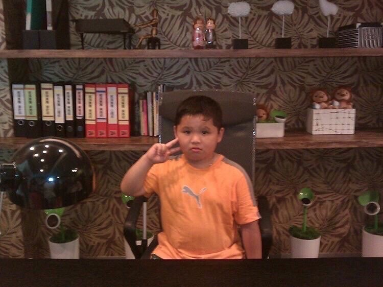

1
王庭瑜
在這次的期末專案之前，在學習JSP的時
候，就認為有一些難度，但還是可以應
付的範圍，而到了期末專題之後，實際
接觸後，我才發現實際上並沒有在課程
中所認為是自己可以應付的，一個簡單
的功能，可能就耗費了我九牛二虎之力
才完成，除了JSP之外，也知道了資料
庫的重要性，一個好的資料庫，可以幫
助我們完成許多的事情。總而言之，在
這次的期末專題中，我深刻地體會到了
自己還有須多東西沒有學到，希望在之
後，我可以繼續精進自己。
2
吳駿
這學期的多媒體課程讓我受益匪淺，學
到了HTML、CSS和JavaScript等知識。
初學HTML時並無太大困難，但學CSS時
才發現網頁美觀並非易事，排版成為最
大挑戰。進入JavaScript部分更考驗
邏輯思考能力，我思考速度較慢，但願
意花時間理解複雜內容並提升自己。總
之，這堂課讓我輕鬆應對簡單部分，並
願意攻克困難內容，期待將來能在工作
中應用所學。
3
黃梓睿
這門課讓我學到了使用JSP和MySQL進行
網站後端製作和前後端整合。透過JSP
，我學會了在HTML頁面中嵌入Java程
式碼，並利用jsp標籤和各種內建功能
實現動態。我學習還到了如何處理表單
輸出、輸入以及執行資料庫操作等。此
外，我深入研究了MySQL資料庫的使用
，包括資料表建立以及夠是view的建立
與應用。這門課提讓我們實際的操作到
一個網站的製作過程，以及去思考用戶
的各種行為並提前加以提供對應的功能
，這些對於我未來職場上都非常的有幫
助。
4
林泓佐
在這學期中，我學習了HTML、CSS和
JavaScript等網頁開發的基礎知識，
並且運用這些知識來製作一個賣衣服
的電商網站。這個專題讓我體驗到了
從企劃到實作的完整過程，也讓我發
現了自己的優點和不足。我覺得自己
在網頁設計方面還有很多可以改進的
地方，例如美觀性、易用性、效能等
。我也意識到了要製作出一個好的網
站，不僅需要技術，還需要創意和溝
通。在這個專題中，我和我的組員們
相互協助，分享想法，解決問題，最
終完成了一個我們都滿意的作品。我
感謝老師和同學們的指導和幫助，也
感謝自己的努力和堅持。這個專題讓
我更加熱愛多媒體程式設計這門課程
，也讓我更有信心在未來的工作中發
揮所學。
5
廖偉翔
老實說，對我而言，一個網站的設計並不
是非常困難。理解所有背後的邏輯之後
，五種語言的妥協應用算是勉強可行的
。不過，當我認知到一個團隊的每個人
有不同的喜好時，整件事情就會變得非
常不同。熟悉不同人的程式寫法，理解
每個人所負責的部分。尤其是在後端的
程式碼中，傳遞資料變得十分重要。資
料的輸入輸出關乎著整個城市的邏輯運
行，常常除錯就得try...catch...，讓
人頭疼的不得了。不過我想，最有趣的
真的莫過於挑戰自己的極限。聽著身旁
的隊友提出要求，對我來說就如同開啟
新的難度。我的心情仍是悸動的，因為
我知道，當我學會了，這就成為我的能
力之一，誰也奪不走。從前端學到後端
、從設計學到功能、從排版走道資料，
種種失敗與成功的時刻，一步步拼起了
一個屬於我們的夢想，建造一個以網站
呈現的希望。不論是老師、組員，我想
，大家都功不可沒。最後，期盼大家都
能夠經由這兩門課，理解每個網站人員
的辛苦！
6
洪譽銓
透過這次的期末專案，我獲益良多。首先
，我了解了更多網頁的設計與排版技巧，
要製作出一個美觀的商品頁面對我而言需
要花費不少的時間，我認為要完成這項作
業，結合課程所學並上網查詢方法是必須
的。此外，我也思考了如何透過專業的角
度去分析一個網頁設計的優缺點。最後，
我認為最為重要的是組員之間的協調，充
分分工合作才能發揮每個人的價值。